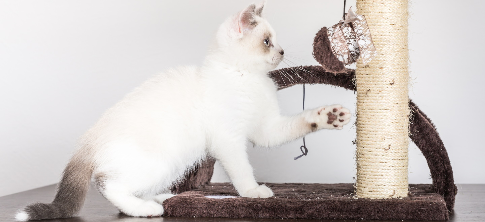
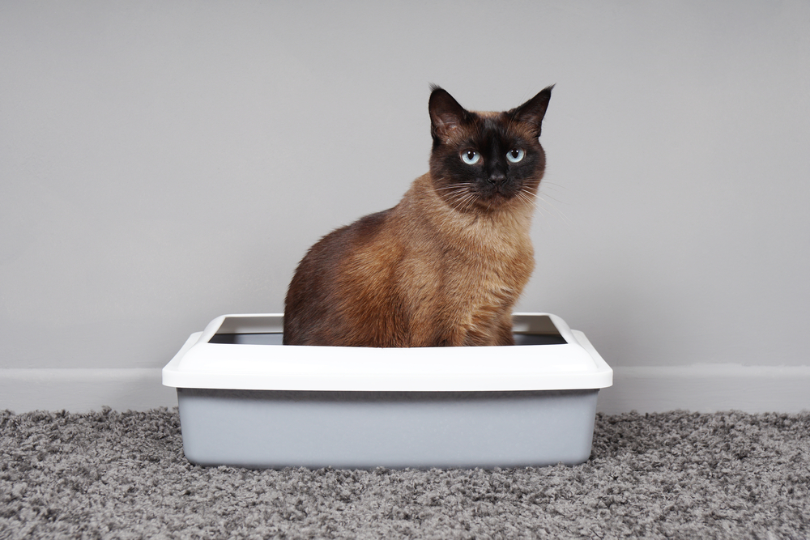
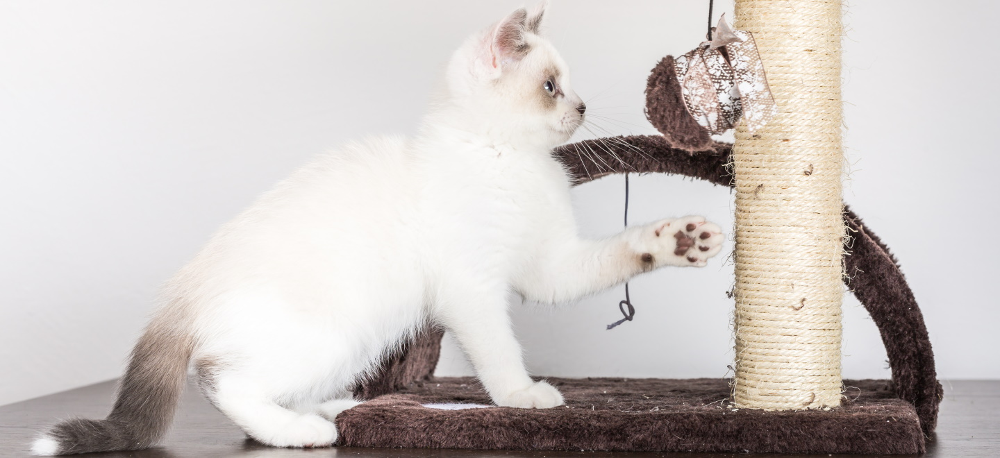
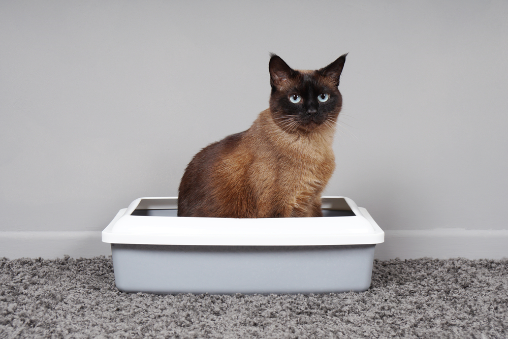

Говорят, наши домашние питомцы, как маленькие дети, все нормы поведения и житейскую мудрость им в голову необходимо вложить самим. Обучение кошки – занятие не из простых, но набравшись терпения и уделив этому процессу достаточно внимание, из питомца вырастит верный друг, надежный партнер и достойный компаньон на всю жизнь, который будет поддерживать в сложные минуты и дарить положительные эмоции.
Для того, чтобы обучение прошло гладко котенок должен как можно больше времени провести с матерью. Заводить котенка лучше всего начиная с трехмесячного возраста, когда он уже окреп и обладает основными нормами поведения. Дело в том, что с первых дней единственным воспитателем малышей является кошка, и никто другой. Мать играет с ними, прививает чистоплотность, и передает свои знания. Кошка может даже научить пользоваться лотком и когтеточкой. Когда вы берете котенка к себе домой, все обязанности воспитания ложатся на вас самих. Вот только котенок подчиняться вам не обязан. Прежде чем он начнет слушаться и уважать хозяина, нужно для начала показать кто в доме лидер.
Чтобы стать «вожаком стаи» для кошки, ей необходимо четко обозначить нормы поведения и границы дозволенного. В частности, кошка должна понимать, что нельзя царапаться, кусаться, лазить где не положено, а для сна у нее есть определенно-отведенное личное место. Важно постоянно быть начеку, потому как животное периодически будет прощупывать свои возможности и проверять вас.
Следующие золотое правило воспитания – нельзя бить, пугать и кричать на питомца. Страх и громкие звуки разрушают психику животного и создают обратный эффект, ваш любимец вырастит агрессивным, мстительным и обидчивым, о какой дружелюбности может идти речь в этой ситуации? Лучшим решение будет спокойный тон и использование специального слова, такого как «фу». Если каждый раз пытаясь нашкодить кошку одергивать, она со временем привыкнет и поймет о существовании правил. В процессе дрессировки хорошо помогает поощрение, пушистый друг с большей охотой начнет слушаться, если после этого будет получать вознаграждение в виде лакомства, интересной игры и ласки.
 



Если вы хотите, чтобы кошка была воспитанной и не выросла капризной, кормление тоже должно подчиняться правилам. Наши любимцы – настоящие манипуляторы и хитрецы, они прекрасно умеют выпрашивать вкусности с хозяйского стола, наедаются ими и затем отказываются от полезного и аппетитного корма.
Чтобы кот не стал попрошайкой, кормить его необходимо одновременно с семейным ужином и завтраком, параллельно, каждый раз в одно и то же время. Поверьте, питомцу будет не до вашего стола. Если любимец отказывается от еды и выбирает попрошайничество, кормите его чуть заранее, перед тем как сами садитесь за стол. Когда все приступят к трапезе, кот уже будет сыт. Если и это не дает результатов, просто выставите кошку с кухни, и не пускайте назад, как бы она не кричала. Строгие меры покажут, что ваше решение неоспоримо.
Начинающим владельцам кошек сложнее всего приходиться с приучением к лотку и когтеточке. Если котенок до трех месяцев рос с мамой, то ему достаточно будет несколько раз показать места расположения важных предметов. Но котенок не всегда приходит в новую семью подготовленным, тогда хозяевам будет непросто. Но есть пару по-настоящему действенных советов, которые помогут научить питомца справлять потребности в отведенных местах.
Для начала, кошка быстрее привыкнет к туалету, если позаботиться и обеспечить её удобным лотком, а также показать где он стоит. Для этого нужно будет поймать момент, когда кошка захочет в туалет и отнести её в лоток. Понять это легко питомец мяукает, мечется и ищет укромное место. Если заметили, что животное уже пристроилось справлять нужду в неположенном месте, отвлеките его резким неожиданным звуком и сразу же перенесите к лотку.
Тыкать носом ни в коем случае нельзя, это не принесет ожидаемых плодов, кошка ничего не поймет, а попросту обидеться. Правильнее будет строгим голосом сказать «фу» или «нельзя», промокнуть бумагу в кошачьей моче и отнести в лоток месте с нашкодившим питомцев. «Место преступления» необходимо хорошенько обработать и замыть, используйте средства от кошачьего запаха или другое сильно пахнущее чистящее средство, если такого нет, можно использовать лимон, апельсин или чеснок. Такой резкий запах отобьет желание у животного вернуться в облюбованный угол.
Следующей задачей стоит обучение кошки пользоваться когтеточкой. Принципы тут аналогичные, как и с лотком. Если питомец часто дерет мебель, обрабатывайте эти места цитрусовыми или используйте отпугивающие средства. Установите когтеточку рядом тем местом, где кошке нравится точить когти. И как только она примется за дело, строго остановите животное привычным запретным словом «фу» и покажите правильное место, которое следует драть когтями. Похваливая кошку и поощряя, вы мотивируете её к действию. Чтобы привлечь кота к определенной поверхности можно использовать кошачью мяту, она очень нравится пушистым проказникам.
Вам следует также понимать, что процесс воспитания зависит не только от ваших усилий, но и от характера питомца, который во многом определяется особенностями породы. Допустим, шотландская вислоухая, абиссинская кошка и мейн-кун – это общительные и активные породы, они любят людей и легко привыкают к правилам. Британская и персидская – флегматичные и спокойные породы, они менее дружелюбны и склонны к капризам. В воспитании бенгальской кошки главное – защищать мебель и ковры, ведь представителям этим питомцам нравится точить когти обо все подряд. А вот сиамская кошка – настоящий хозяин в доме, приучить ее к порядку довольно сложно.
Главное - помните, к какой бы породе ни принадлежала кошка, обращаться с ней нужно, как с членом семьи. Любите своего питомца, уделяйте ему время, будьте терпеливы и упорны, и образцовое поведение кота не заставит себя ждать.